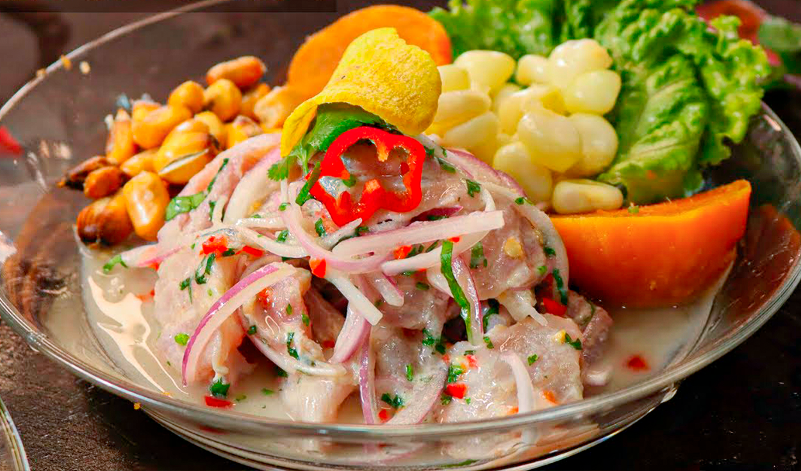

Ceviche Peruano

El plato bandera de Perú
El ceviche peruano es un plato tradicional de la costa del Perú que contiene pescado crudo (usualmente de carne blanca), camote, choclo desgranado, canchita chulpi, chifles, ají, limón, cebolla roja, entre otros ingredientes.
Ingredientes:
- Pescado
- Limón
- Choclo
- Camote
- Ají
- Caldo de pescado
- Culantro
- Cebolla roja
- Chifles
- Canchita chulpi
Preparación:
- Exprime los limones.
- Corta el pescado en trozos de 3 centímetros.
- Corta el ají y el culantro muy finamente.
- Corta la cebolla en corte juliana.
- Mezcla el caldo de pescado con el ají, la cebolla y el culantro.
- Une el pescado con todos los demás ingredientes.
- Sirve con chifles y canchita chulpi al gusto.